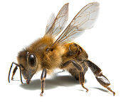

Honeybee Mass Extinction
Perhaps the biggest foreboding danger of all facing humans is the loss of the global honeybee population. The consequence of a dying bee population impacts man at the highest levels on our food chain, posing an enormously grave threat to human survival. Since no other single animal species plays a more significant role in producing the fruits and vegetables that we humans commonly take for granted yet require near daily to stay alive, the greatest modern scientist Albert Einstein once prophetically remarked, “Mankind will not survive the honeybees’ disappearance for more than five years.”
Save Bees
There are several non-profit organizations that specifically focus on saving our honeybee population. Donate today!
- Operation Honey Bee
- American Honey Bee Protection Agency
- Beverly Bees
- Save the Honeybee Foundation
- Bee Scientifics — Honey Bee Research
- Honey Love — Urban Beekeepers
- WWF — Adopt a Honeybee
- Greenpeace — Red de bijen
About
We are the Beetles, Taco, Tomas, Niels, Gijs.
We are programmers, and during UIKonf 2015 we created an app to raise awareness for this bee situation. It's a version of Game of Life, but with a hexoganal grid: Game Of Hive!